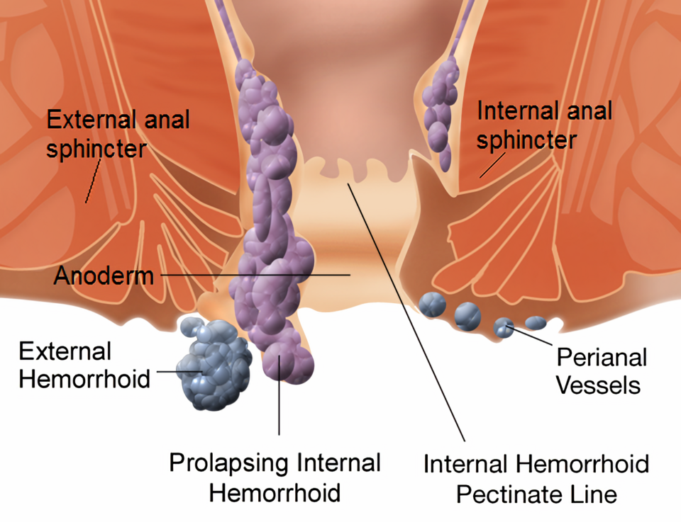

בדיקת שד ובדיקה רקטלית
שתי בדיקות אינטימיות שכל רופא צריך לדעת לעשות נכון, בעדינות ובשיטתיות
בסוף הסדנה תדעו
- לתאר את הניקוז הלימפטי של השד ואת הרמות של ה-axillary nodes
- לקחת אנמנזה ממוקדת של תלונה בשד ושל תלונה אנורקטלית
- לבצע בדיקת שד מלאה: הסתכלות בישיבה, בלוטות לימפה ומישוש בשכיבה
- לתאר גוש בשד ולזהות סימני עור ופטמה מחשידים
- לבצע בדיקה רקטלית בתנוחה נכונה עם מלווה ובשיטתיות. לדעת מתי לדחות אותה
- לזהות טחורים לפי דרגה ופיסורה אנאלית
לאן מתנקזת הלימפה?

👆 לחצו על אזור בציור כדי לקרוא עליו
ה-subareolar plexus (Sappey). הלימפה זורמת מהעור למקלעת הזו ומשם לתוך רקמת השד. לכן בודקים תמיד גם את הרקמה שמתחת לפטמה
70–80% מהלימפה של השד מתנקזת ל-axilla. רמה I לטרלית ל-pectoralis minor, רמה II מאחוריו (כולל Rotter's nodes בין pectoralis major ל-minor). מוששים בישיבה, כשהבודק תומך בזרוע
מדיאלית ל-pectoralis minor, כולל ה-infraclavicular nodes. מכאן הלימפה ממשיכה ל-supraclavicular nodes, שכבר נחשבות מחוץ ל-axilla. מוששים גם מעל ומתחת ל-clavicle
ניקוז עיקרי ב-2–3% מהמטופלות. ניקוז משני (יחד עם ה-axilla) בכ-20%. בלוטות אלה לא מוששות בבדיקה
מה שואלים
התלונה
- גוש, כאב, הפרשה מהפטמה, נפיחות, שינויים בעור
- גוש: ממתי, האם גדל, האם משתנה עם המחזור
- חשד לסרטן: ירידה במשקל, כאבי עצמות, כאבי ראש, שינוי בנשימה
- בעיות קודמות בשד: הדמיות, ביופסיות ותוצאותיהן, סרטן שד בעבר
הסיכון
- גיל ומוצא
- חשיפה לאסטרוגן: גיל הווסת הראשונה, גיל המעבר, הריונות וגיל הלידה הראשונה, הנקה, טיפול הורמונלי וגלולות
- כריתת רחם: האם הוצאו גם ה-ovaries
- משפחה: מוטציות ידועות, סרטן שד ושחלות, הגיל בזמן האבחנה
- הקרנות לבית החזה בגיל צעיר
בדיקת השד

איך מתארים ממצא
- גוש: גודל, צורה, עקביות, מיקום (לפי שעון ומרחק מהפטמה) והאם מקובע לעור או לשריר
- שפיר (פיברואדנומה, ציסטה): יכול להיות קשה, אבל בדרך כלל תחום היטב וזז בקלות
- סרטן: קשה, פחות תחום. כשמזיזים אותו הוא "גורר" את הרקמה סביבו
- רגישות למגע כמעט אף פעם לא עוזרת לאבחנה
- פטמה: מחלת Paget מתחילה בפטמה. אקזמה מתחילה ב-areola. משיכה חד-צדדית חדשה (שבועות-חודשים) מחשידה. היפוך דו-צדדי ותיק בדרך כלל שפיר
- הפרשה: מצד אחד או משניהם? מצינור אחד או מכמה? דמית? מצינור אחד ובלי גוש: בדרך כלל פפילומה (60–80%)

למה זה כל כך רגיש?
- ה-anal canal: כ-4 ס״מ, מה-anal verge ועד ה-anorectal ring
- ה-dentate line: באמצע התעלה. מתחתיו עצבוב סומטי (כואב), מעליו עצבוב אוטונומי
- כריות הטחורים: בדרך כלל שמאל לטרלי, ימין קדמי וימין אחורי
- ה-internal anal sphincter (שריר חלק) וה-external anal sphincter (שריר רצוני). Puborectalis הוא "המתלה" סביב ה-rectum
האנמנזה מובילה לאבחנה
- כאב חד "כמו סכין" ביציאה ועווית אחריה: פיסורה
- כאב פתאומי עם גוש קשה ב-anus: טחור חיצוני עם קריש
- כאב שמחמיר עם חום: מורסה
- כאב גם בלי יציאה, במיוחד עם דימום: לחשוב על ממאירות
- דימום: צבע, כמות, קשר ליציאה, על הנייר או מעורב בצואה. הרגלי יציאות, בריחה, ניתוחים קודמים, הקרנות, לידות

הבדיקה הרקטלית

טחורים ופיסורה
דרגות של טחורים פנימיים
טעויות נפוצות ורשימת בדיקה
טעויות נפוצות
- מישוש שד בישיבה בלבד, בלי שכיבה ובלי יד מעל הראש
- לשכוח את ה-axilla, את אזור ה-clavicle או את הרקמה שמתחת לפטמה
- "יש גוש" בלי גודל, מיקום לפי שעון וקיבוע
- בדיקה רקטלית בלי מלווה או בלי הסבר
- למשש רק את ה-rectum ולדלג על ה-anal canal
- להתעקש על אצבע במטופל עם פיסורה כואבת
רשימת בדיקה
- ☐ הצגה עצמית, הסבר, הסכמה, מלווה
- ☐ שד: הסתכלות בישיבה, ידיים למעלה, כיווץ ה-pectoralis
- ☐ ה-axilla, מעל ומתחת ל-clavicle, משני הצדדים
- ☐ שכיבה, יד מעל הראש, כל הרבעים ומתחת לפטמה
- ☐ תיאור ממצא: גודל, צורה, עקביות, שעון ומרחק, קיבוע
- ☐ רקטלי: תנוחה על הצד השמאלי, הסתכלות, "לכווץ" ו"ללחוץ"
- ☐ חומר סיכה, anal canal, rectum, prostate / רקטוצלה
- ☐ צבע הצואה על הכפפה, דם
- ☐ לכסות את המטופל, להודות ולתעד
מחקרים שכדאי להכיר
151,538 נשים בנות 35–64, מעקב של 20 שנה. בדיקת שד כל שנתיים בידי עובדות בריאות הקטינה את שיעור הסרטן בשלב III–IV (37% לעומת 47%). ירידה של כ-30% בתמותה בנשים בנות 50 ומעלה
Mittra I et al. BMJ 2021;372:n2566,537 גברים בני 45. הבדיקה גילתה סרטן ב-0.05%, פי ארבעה פחות מ-PSA. ב-86% מהגידולים שנמצאו ב-PSA הבדיקה הייתה תקינה. לא כבדיקת סקירה בגברים צעירים
Krilaviciute A et al. Eur Urol Oncol 2023;6(6):566-73האבחנה קלינית. בדיקה רקטלית כדי לשלול מחלה אחרת ולהעריך את ה-sphincter. אנוסקופיה לפי הצורך. קולונוסקופיה למטופלים נבחרים עם דימום. קודם סיבים ונוזלים, אחר כך קשירה בגומייה
Hawkins AT et al. Dis Colon Rectum 2024;67(5):614-23חמישה דברים לקחת למחלקה
- רוב הלימפה של השד מתנקזת ל-axilla. בודקים אותה תמיד, יחד עם אזור ה-clavicle
- שד: הסתכלות בישיבה עם ידיים למעלה, מישוש בשכיבה עם יד מעל הראש, כל הרבעים ומתחת לפטמה
- גוש מתארים לפי גודל, צורה, עקביות, שעון ומרחק מהפטמה וקיבוע
- בדיקה רקטלית: הסבר, מלווה, צד שמאל וחומר סיכה. לא לשכוח את ה-anal canal
- פיסורה בקו האמצע האחורי שכיחה. פיסורה בצד מחייבת לחשוב על מחלה אחרת